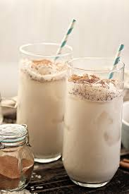

|  | HorchataA very easy way to make great horchata!" |
Ingredients1 cup long-grain white rice, rinsed. 1 cinnamon stick, preferably Mexican, broken into pieces, plus more for garnish. 1/2 cup sugar, or to taste. 1 tablespoon ground cinnamon, preferably Mexican, for garnish. |
|
| <<< Back to Beverages | |